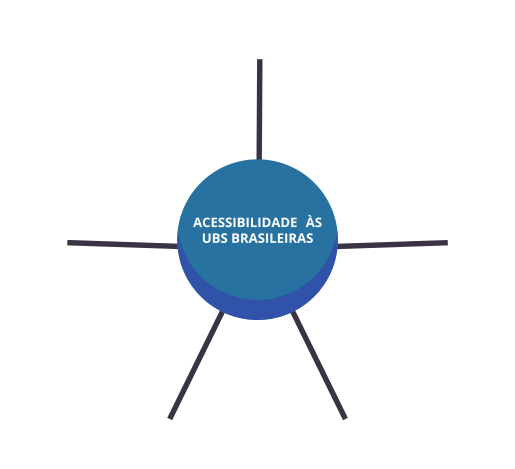

Alguns autores utilizam o termo acessibilidade, sendo que, muitas vezes, acessibilidade e acesso são empregados de forma ambígua e alternada.
A acessibilidade estaria relacionada ao que é “necessário para que se atinja a atenção ao primeiro contato, possibilitando a chegada das pessoas aos serviços de saúde” (MENDES et al., 2012, p. 2904) e tem relação com aspectos geográficos, obstáculos e distância para chegar aos serviços de saúde, com questões físicas e da estrutura das unidades e comunicativas que dispõem sobre fluxos e sinalizações nos serviços.
Clique em cada número para conhecer os dados de acessibilidade nas UBS:
